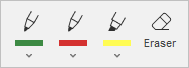

Crtanje slobodnom rukom na PDF-u
U PDF uređivaču možete koristiti karticu Komentar za crtanje slobodnom rukom, dodavanje rukopisnih beleški, označavanje teksta i brisanje na svom PDF-u.

Da biste crtali, pisali ili označavali tekst, kliknite na ikonu Olovka ili Marker i pomerajte kursor. Kliknite na strelicu nadole da biste prilagodili boju i debljinu poteza. Kliknite na Više boja ako boja koju želite nije na paleti.

Kada završite sa crtanjem, pisanjem ili označavanjem, ponovo kliknite na ikonu Olovka ili Marker, ili pritisnite taster Esc.
Kliknite na alat Gumica i pomerajte kursor napred i nazad da biste izbrisali potez. Gumica briše samo ceo potez.
Koristite dugme Izaberi za selektovanje natpisa, crteža ili označenog teksta. Kada izaberete element, možete promeniti veličinu ili ga obrisati.